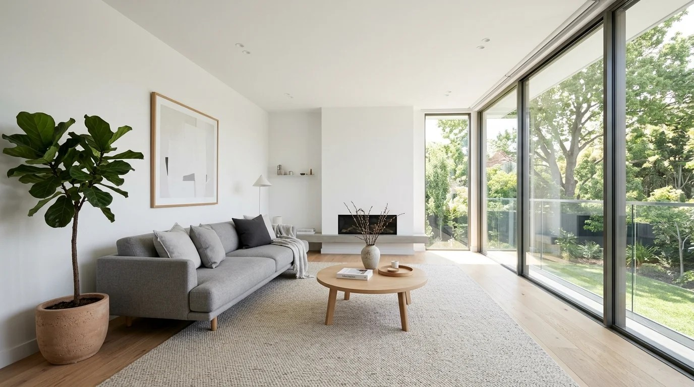
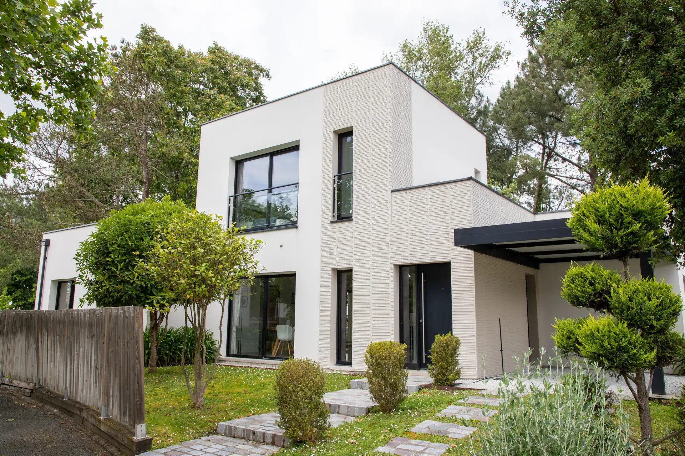
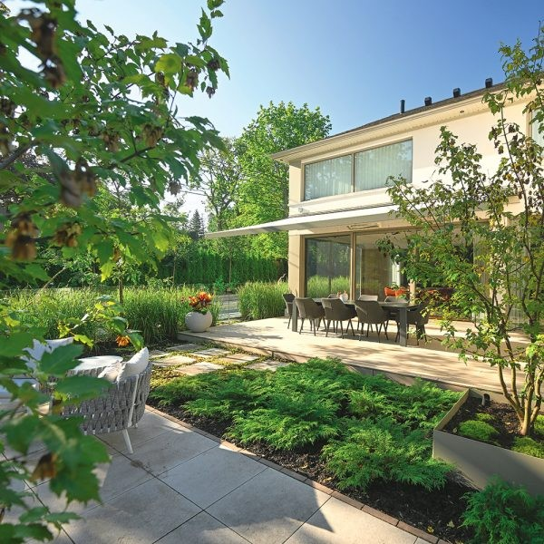
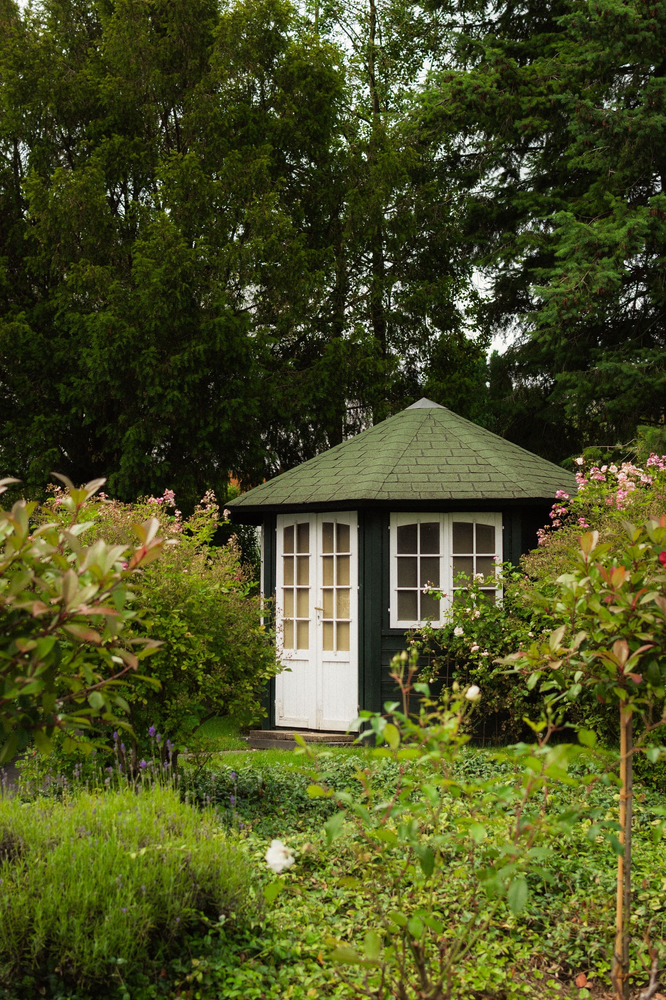

WohnzimmerDer offene Wohnbereich verbindet Küche, Esszimmer und Wohnzimmer. Dadurch entsteht ein großzügiges Raumgefühl.

Außenansicht des WohnhausesDas Wohnhaus Sonnental wurde für eine vierköpfige Familie geplant. Ziel war es, moderne Architektur mit einer gemütlichen Wohnatmosphäre zu verbinden.
Große Fenster sorgen für helle Räume und bieten einen schönen Blick in den Garten. Nachhaltigkeit spielte bei der Planung ebenfalls eine wichtige Rolle.
| Merkmal | Information |
|---|---|
| Baujahr | 2024 |
| Wohnfläche | 185 m² |
| Grundstück | 720 m² |
| Bauzeit | 12 Monate |
| Energieversorgung | Photovoltaikanlage |

WohnzimmerDer offene Wohnbereich verbindet Küche, Esszimmer und Wohnzimmer. Dadurch entsteht ein großzügiges Raumgefühl.

TerrasseDie Terrasse lädt zum Entspannen ein. Hier schmeckt sogar der Sonntagskaffee ein kleines bisschen besser.

GartenDer Garten bietet ausreichend Platz zum Spielen, Entspannen und für gemütliche Grillabende.